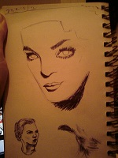
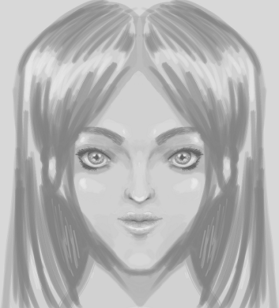

Drawings and Things
I draw sometimes. I normally use some combination of biros, pencil crayons, MS Paint and the occasional pencil.
I love MS Paint dearly and consider it the epitome of perfection.
So! I thought this page would be a handy place to put a gallery of sorts, and also in-progress things with explanations of my process, that sort of thing. It might be interesting to folks who want to achieve similar effects (if those people exist!). It's also a roundup of my thoughts, which are boring, but I don't see why I should be the only one who has to suffer them.
I'm an amateur. Drawing interests me because I'm naturally very bad at it, and can't picture objects or images in my mind at all. When I was 12, I got so fed up with being so bad at it, that I grabbed every 'how to draw manga' book I could get my hands on, and I made myself draw every day. I kept that up, more or less, for some years.
I've always regarded it as an experiment, with myself as the subject-- what standard can a human with no innate ability reach in a field?
Projects
This Website
This is the obvious place to start!
I have a picture on the homepage. At time of writing, it looks like this:

I wanted a two-second MS Paint doodle of me.
I forgot that I can't draw lines.
Here's how it progressed.

So, there was a step before this where the whole picture was scratched out in the smallest brush tool. I used a 500px by 500px canvas and drew guidelines, then drew features on them in the same colour, erasing the guidelines as I went.
I didn't save it, so this is the earliest save I have. I've gone over the outline with the biggest brush and made it more even. I have a bad chicken-scratch habit that I can't kick. I redrew the right side of the face approximately 1 billion times.

This is a mix of brushes 2 and 3. (There are 4). And copious use of the eraser tool.
The eyes were uneven for a while; I went back much later and evened them out a bit. This took FOREVER. I discovered that drawing lines while zoomed out results in wobbly line quality. This step probably took an hour. :( When drawing in Paint, I start zoomed out to get the general shapes (it's easier to see if things are uneven at a distance), then zoom in for details.

Some colour experiments. You can see the old uneven eyes in these.
This one looked a bit odd when put in a round frame for the homepage. Also my eyes aren't that colour. The shade looked a bit too saturated for its surroundings.
Going back and adding eyebrows. I'd forgotten them. :) The eyes are still uneven!

Another colour experiment.
I'd evened the eyes by this point. My eyes arguably aren't this colour either. :) (Originally, I was aiming for hazel, but I liked the goofy flame effect caused by doing it wrong).
I tried cropping it. It looked weird.
Maybe I'll use this as an avatar.
Here's how the coloured version looked on the homepage:

It looked a bit too busy for the homepage, and odd in the round frame, so I recoloured it to match (at a glance, anyway; the gradient means that it doesn't quite match). I'd include a screenshot... but it's the homepage! Go there to look! :)
I often use a simple, flat monochrome colouring technique in paint. I draw suggestions of the hair, but don't isolate it from the background. Then I fill the hair. Next, I fill the eyes in the same colour. Sometimes misc islands of white are left over in interesting ways.
Painting in Paint
Some examples

This was my old homepage image, but I was worried people would think It was meant to be me. (It's just a random face. I like drawing them.)
Drawing in black and then filling in black at the end is often effective.
Traditional Media
Although I'm passionately in love with MS Paint, I'll always prefer traditional media.
With biros, it's possible to get a much more gradated effect with minimal effort. (I will try to upload some clear examples in the future) Pencils are similar, although I try to avoid them, as over the years, pages drawn in pencil fade and rub away.
I've kept drawing pads since I was 12 (just supermarket things); I currently have two A3 pads in an attempt to learn to draw big (and from the elbow) and get better at lineart. So far, I'm finding I just draw small pictures with a lot of space around them...
I used to want to buy 'how to draw' books constantly; I think I've got better at remembering adages about bad workmen and tools. Perhaps others are familiar with that experience.
I rarely colour; monochrome tends to look nicer to me. That, and there's the omnipresent worry that I'LL RUIN EVERYTHING. There's so much choice! And I always get it wrong! But I have strong positive feelings for burnt orange paired with turquoise (or navy at a pinch). When I dare, I use pencil crayons, or sometimes watercolour pencils. I don't really know how to get the most out of them yet. So I use them much like regular colours, but that can be blended if rubbed.
I don't have a scanner in my house at the moment. I should change that.
Misc. old drawing pad pages. These are several years old; I haven't really improved in ages, and haven't uploaded pictures for a while. :( 3 are just biro, one is pencil
I used to use fashion magazines lying around the house for reference. Now I've moved out, I don't have any fashion magazines lying around.




Some yellow lilies. Drawn Summer 2016 in water colour pencils that I just treated like regular colour pencils... I've since cut it out and put it on my wall.
Sometimes things go wrong. For example...

The whole 'taking a photo of a painting on mobile' thing isn't amazing. This was done with watercolour pencils, several years ago. Final Fantasy fans might recognise it.

Adding shading...

Water added! Just to the hair and torso at this point. I should have stopped here.

Things started to go wrong. I splashed a bunch and blotted things.

Aaand I ruined it. After smudging the pupils, I tried to fix it by making the eyes lightless, but there was no saving it.
This always happens. Eventually, you get used to your inevitable failure (and remember to take photos along the way)
The most annoying thing is that there's no correlation between time-spent and quality-of-end-result. This Buffy doodle took 20 mins, and I'm not sure I've drawn anything better before or since:
Portraits are my thing. And trying to draw 'realistically', even though pros find that boring. I like to obsess over the details.
I used to feel bad that I only ever wanted to draw faces, and try to force myself to draw other things. I've now stopped caring. I'll draw what I like.
I'd like to be good at landscapes but I am absymal.
And I paint like a five year old, as 12-year-old me did not resolve to paint every day, and had the natural artistic skill of a five year old.
Krita
This week (early Oct '16), I tried out Krita, which is free, open-source painting and drawing software. This is dedicated painting and drawing software, rather than photo-manipulation software with some painting and drawing capability. It's designed for use with a tablet (it's pixel art, not vector art, though there's a kickstarter to improve the vector functionality). I have a little experience of tools like this, but not lots (aside from my beloved MS Paint, I've dabbled with Artweaver, Photoshop CS2 and GIMP). I haven't painted with layers since high school. Here's how I got on!
First scribbles
Krita installed fine on Windows 7, and took about 10 seconds to start up the first time. I did experience lag (which was a 'noooooooo!' moment), but a Google around and it was easy to fix. I had to turn off OpenGL (in a checkbox at the top, after navigating to settings > configure Krita > Display). This was on by default; luckily it was the first thing I tried as I've had problems with OpenGL settings slowing down emulators in the past. This does make zooming slow and jerky; the best workaround I've found is to wiggle the cursor around to update the page after zooming. To the right is my test doodle, where I tried out a bunch of brushes and things.
I was excited; the UI was lovely and tools were easy to find. It was quick to get started, the keyboard shortcuts were guessable, and I didn't once click a menu or zoom accidentally when trying to paint a line (I find this happens far too often when using complex drawing software).
 And here's a quick play with the 'multibrush' tool. It mirrors your
drawing on a horizontal and vertical axis, which you can spin around.
And here's a quick play with the 'multibrush' tool. It mirrors your
drawing on a horizontal and vertical axis, which you can spin around.
After playing around a bit, I had a look for tutorials. This one looked ace, so I started there on my next lunchbreak.
It's fair to say my first attempt... was an absolute disaster.

Here's a lower layer; you can see how shaky it is. Not good!
I'd set out to use a similar process to do a different type of picture, but the styles didn't mesh well. I didn't shade subtly enough, and I had some very shaky brush strokes, partly because I'd used a low-opacity brush in the wrong place by accident, and then tried to fix it. I think my mental state also plays a big role; I was tired and miserable the day I tried this.
So, for my next attempt later in the week, I tried making something closer to the style of the original, and took more care over shading and using firm brush strokes. This took much longer than the first attempt, at around 5 hours, for the 'finished' thing (as you can see, it's not really finished; I was just sick of it by that point and wanted to play the guitar):

Yeah, this is the point where I itch for traditional media. In pencil,
I could smudge this with my hand for about 10 seconds and blend all this
shading so it looked less clumsy. I haven't worked out how to use
digital smudging tools effectively yet, so I just leave it.
This also makes me loath to use darker shadows, which in turn leads
to rather flat-looking images.
Overall, I'm thrilled with how easy it was to make this, and can't wait to try out some more brushes and things. For someone who serious problems with skew, and has to flip images constantly, the horizontal mirror tool is fantastic. I haven't gone into much detail about *how* I made these, as I just followed the steps in the tutorial linked. The tutorial itself assumes a general knowledge of proportions and planes of the face; it's a guide to using Krita rather than a guide to drawing itself. That said, you could probably learn a lot about those things by closely observing and copying the tutorial image. I didn't use a reference image, but I've spent a ridiculous amount of time drawing facial features over the years, so generic eyes, noses and mouths are burned into my brain.
I use an Intuos Pro Medium that I bought a couple of years ago. It's been perfect and I feel I'm only limited by my own ability (oh, and wacom have *beautiful* packaging; the stylus is even stored in a faux inkwell, the shape of which cannot be described, only experienced). They apparently have good Linux support, though I haven't tested this much. Before my Intuos, I had this, which is completely different and didn't suit me.
 A quick test of the HB pencil preset brush, along with some smudging presets.
I've definitely
got a long way to go before I can replace a real pencil.
A quick test of the HB pencil preset brush, along with some smudging presets.
I've definitely
got a long way to go before I can replace a real pencil.
Currently Learning...
I'm working through Loomis' 'drawing the head and hands' at the moment. At some point, I'll upload some of my attempts at the plates, with commentary.